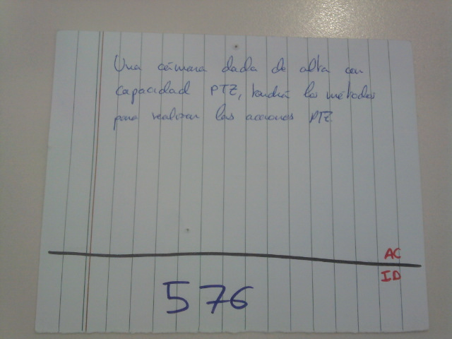

Introducción a SCRUM
Luis Ciudad
Programador Backend en NoSoloSoftware
{ twitter: @sm477er, github: nanocity }
¿Qué es SCRUM?
SCRUM es un marco para la ejecución de prácticas ágiles en el desarrollo de proyectos. [...] Es una metodología de desarrollo simple que se basa en la adaptación continua a las circunstancias de la evolución del proyecto.
Scrum Manager
Metodologías ágiles
Son métodos de ingeniería del software basados en el desarrollo iterativo e incremental, donde los requerimientos y soluciones evolucionan mediante la colaboración de grupos auto organizados y multidisciplinarios.
Wikipedia
Diferencias entre métodos predictivos y agilidad
- Producto definido
- Entorno estable y predecible
- Plan financiero y temporal
- Desarrollo en fases
- Valor
- Menor tiempo de salida al mercado
- Adaptación al cambio
- Iteraciones breves
Ciclos de desarrollo ágil
- Concepto
- Especulación
- Exploración
- Revisión
- Cierre
Entornos ágiles
- Valor/predicción
- Estabilidad de requisitos
- Tamaño del sistema
- Rigidez y coste de prototipado
Implicaciones de adoptar metodologías ágiles
Organización
- Modelos de desarrollo basados en personas
- Ambientes poco jerarquizados
- Personal experto
Personas
- Responsabilidad y autodisciplina
- Capacidad de comunicación y trabajo en equipo
- Transparencia
SCRUM
Artefactos
- Roles
- Propietario de producto
- Equipo
- Scrum Master
- Elementos
- Incremento
- Pila de Producto
- Pila de Sprint
- Reuniones
- Planificación
- Seguimiento
- Revisión
- Retrospectiva
Roles
Gallinas vs Cerdos
Gallinas: Direccion Comercial, Marketing, Usuarios...
Cerdos: Product Owner y Equipo

Roles: Propietario del producto
- Financia el proyecto
- Conoce perfectamente el entorno de negocio
- Tiene capacacidad para tomar decisiones sobre plazos
- Es el encargado de mantener la pila de producto
- Participa en la planificación del sprint
Roles: Equipo
- 'Equipo' no es lo mismo que 'Grupo de trabajo'
- Entre 4 y 8 personas
- Multidisciplinar
- Autogestionados
Roles: SCRUM Master
- Es un árbitro
- Se asegura de que todos los participantes conocen las reglas de SCRUM
- Puede formar parte o no del equipo
- Es necesario en equipos con poca madurez/experiencia
- No se considera ni gallina ni cerdo
Elementos: Incremento
- Resultado de un Sprint
- Correlación con los ciclos de desarrollo ágil
- Parte completa, documentado y testeada
- Cada 15 o 30 días
Elementos: Pila de Producto
- Es un documento vivo
- Visión global del proyecto
- Contiene toda la funcionalidad que se espera del sistema
- Es reponsabilidad del propietario del producto
Elementos: Pila de Sprint
- Subconjunto de la pila de producto + Tareas
- Se crea entre el equipo y el Propietario del producto
- Contiene todas las características a desarrollo en un sprint
Historias de Usuario
- Título
- Descripción
- Prioridad
- Estimación
- Notas
Historias de Usuario
- Identificador
- Criterios de aceptación
Planning poker
- Herramienta de estimación
- Muy útil para conocer el alcanze de las historias
- Juicio de expertos
Reunión: Planificación
- La preparación de esta reunión le corresponde al propetario del producto
- Se conforma la pila de sprint
- Se deciden los plazos del sprint y el objetivo
- Se corresponde con la fase de especulación
Reunión: Seguimiento
- Duración de entre 10 y 15 minutos
- De pie y cerca los elmentos de gestión visual
- 3 cuestiones básicas (Ayer, hoy, impedimentos)
- Cobra importancia el SCRUM Master
Reunión: Revisión
- Reunión informal
- Presentación del incremento al cliente
- No se toman decisiones o se critica el incremento
- Se obtiene feeback a traves de la experimentación
- Se actualiza la visión del producto con nuevos requisitos
Reunión: Retrospectiva
- Mejora continua
- Depuración de los procesos de SCRUM
Kanban
- Permite conocer en un vistazo el estado general de sprint
- Se actualiza en la reunion de seguimiento del sprint
-
Ayuda a reconocer problemas rapidamente
- Muchas tareas empezadas
- Dependencia de tareas
- Tareas que cambian de estado hacia atrás
Burndown
- Puntos de esfuerzo pendientes
- Información de la desviación del sprint desde el inicio
- Permite identificar estimaciones poco precisas